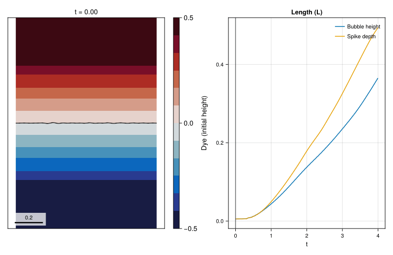
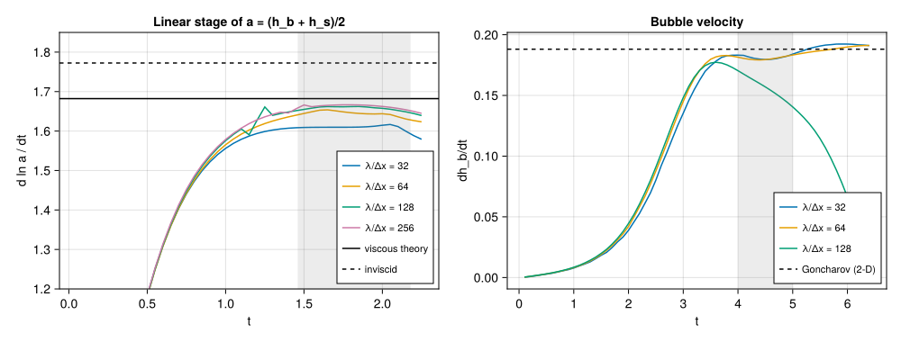
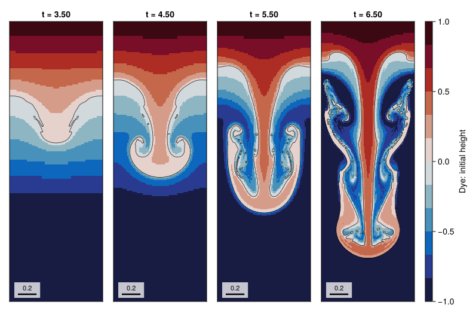
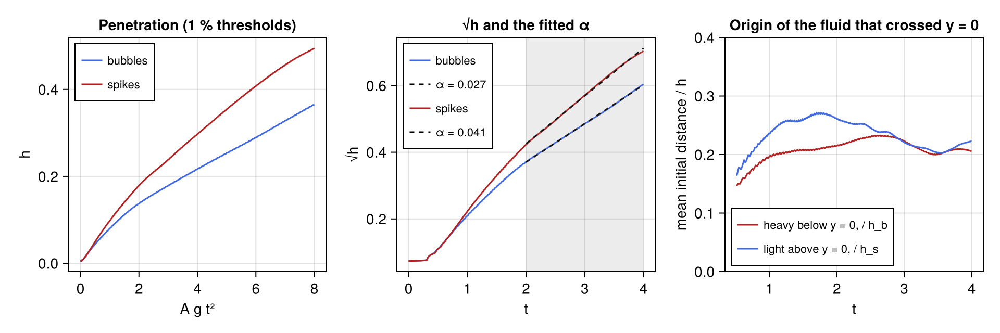
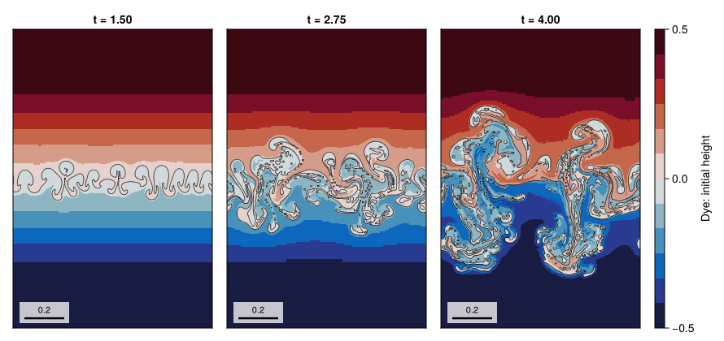

12 – Rayleigh–Taylor instability
Heavy fluid over light: a single mode is checked against viscous linear theory and compared with the two-dimensional potential-flow bubble speed, then a multimode layer grows into a mixing zone whose dye shows where its fluid came from.

Level-5 multimode mixing: the dye carries each parcel's initial height, the interface is drawn on top, and the panel next to it tracks the bubble and spike penetration with a cursor at the shown time.
At a glance
| Physics | Viscous, immiscible two-phase Rayleigh–Taylor instability at Atwood number A=0.5 (heavy density 3 over light density 1), gravity g=1 downward, equal kinematic viscosities in both fluids. The box [0,1] × [y₀,y₁] is periodic in x with free-slip walls at the bottom and top. Single mode (case=:single_mode): one wavelength λ=1, initial amplitude 0.002, [0,1] × [-3,2], perturbation Reynolds number Re_p = λ√(Agλ/(1+A))/ν = 1000, no surface tension, until t=6.5. Multimode (case=:multimode, the default): modes 8–16 with random phases from MersenneTwister(2026) and root-mean-square amplitude 0.001, [0,1] × [-1,1], Re = 3000 on the box width, Bond number (ρ_h-ρ_l)gL²/σ = 4·10⁴ (capillary cutoff wavelength 2π/√Bo = 0.031), until t=4. A passive phase scalar, the dye, carries each parcel's initial height. |
| Algorithms | OneVelocityModel(): one shared velocity, VOF/PLIC interface (height-function normals with WY fallback) with Weymouth–Yue transport, Lax–Wendroff momentum advection, implicit-midpoint variable-viscosity diffusion and the CG/tree-multigrid pressure projection; CGFM surface tension in the multimode run. AMR refines the interface band to max_level and, through a VorticityRefinementIndicator (refine where `h |
| Worth varying | case=:multimode or :single_mode; atwood=0.5; reynolds (1000 single mode, 3000 multimode) and bond (Inf single mode, 4e4 multimode); max_level (4 single mode, 5 multimode); final_time (6.5, 4); modes, amplitude and seed of the initial interface; velocity_model=TwoVelocityModel() for two intrinsic velocities with the CMDGFM projection (one vorticity criterion per phase); vorticity_tolerance=0.02. |
| Validated against | Viscous single-mode linear theory (Chandrasekhar). The nonlinear bubble speed is compared with Goncharov's two-dimensional potential-flow law, but the measured late-time slopes do not converge across these grids. |
| Cost | Level-5 multimode to t = 4: 1363 steps, 117 mesh updates, 55,232 final and peak cells, 1676.9 s including setup. In a separate single-mode run, levels 2, 3 and 4 took 320, 747 and 1501 steps in 10.9, 61.9 and 374.2 s, respectively (finish_single_mode.log); the figure run timings differ. |
Gallery timings: Julia 1.12.7, one Julia thread and one BLAS thread, AMD Ryzen 9 5950X; package loading is excluded.
Setup
The heavy fluid (the TwoPhase liquid) lies above y = η(x) and the light fluid below; with ρ_h = (1+A)/(1-A), ρ_l = 1 and the box width L = 1,
\[\eta(x,0)=\sum_{m} a\cos(2\pi m x+\varphi_m),\qquad \nu=\frac{L\sqrt{AgL/(1+A)}}{\mathrm{Re}},\quad \mu_{h,l}=\rho_{h,l}\,\nu,\qquad \sigma=\frac{(\rho_h-\rho_l)\,g\,L^2}{\mathrm{Bo}}.\]
The fluids start at rest. The single mode is m = 1, φ = 0, a = 0.002 (ka = 0.013), so the bubble rises on the axis x = 0 and the spike falls on x = 1/2; its diagnostics :bubble_height and :spike_height are the tips on these axes: the highest light fluid in the cell column at x = 0 and the lowest heavy fluid at x = 1/2. In the multimode run they are the penetration depths of the mixing zone, the heights where the horizontally averaged heavy-fluid fraction leaves 1 % of its pure values (rows on the finest spacing). The dye PhaseScalar starts as s = y in both fluids and is transported conservatively with the phase fluxes; :spike_origin is the mean initial height of the heavy fluid now below y = 0, :bubble_origin the mean initial depth of the light fluid above it.
Linear growth. The growth rate n of the normal mode exp(ikx + nt), k = 2π/λ, is the root of the interface conditions for two semi-infinite viscous fluids: continuous velocity and tangential stress, with normal stress balanced by gravity and capillarity (Chandrasekhar 1961, §94). linear_growth_rate solves the resulting 4×4 determinant. The tests check the root against the equivalent implicit relation of Xie, Tao & Li (2017) for equal and unequal kinematic viscosities. Without viscosity it reduces to
\[n^2 = Agk-\frac{\sigma k^3}{\rho_h+\rho_l}\]
(Sharp 1984). The explicit approximation √(Agk + ν²k⁴) − νk² (Bellman & Pennington 1954) gives 1.74981 for Re_p = 1000, compared with the viscous root 1.68219 and the inviscid rate 1.77245.
Terminal bubble velocity. In two dimensions the potential-flow bubble of a periodic array saturates at
\[U_b=\sqrt{\frac{2A}{1+A}\,\frac{g}{3k}},\qquad \mathrm{Fr}_b=\frac{U_b}{\sqrt{Ag\lambda/(1+A)}}=\frac{1}{\sqrt{3\pi}}=0.3257\]
(Goncharov 2002, whose geometric constant is 3 in two and 1 in three dimensions); for A = 1 this is Layzer's (1955) two-dimensional √(g/(3k)) = 0.230√(gλ). The often quoted Davies & Taylor (1950) coefficients are for bubbles in tubes and spherical caps, i.e. three-dimensional, and do not apply.
Mixing. Once the initial modes saturate, the penetrations grow as h_{b,s} = α_{b,s} A g t²; make_figures fits √h against t, so α = slope²/(Ag) does not depend on a virtual time origin.
Run
From the repository root, in a Julia session started with --project=examples:
include("examples/12_rayleigh_taylor/rayleigh_taylor.jl")
run = run_example(case = :single_mode, max_level = 3)
@show diagnostic_history(run.flow, :bubble_height).values[end]
multimode = run_example(max_level = 4, final_time = 2.0)Run the multimode default headlessly or regenerate the Cairo figures:
julia --project=examples examples/12_rayleigh_taylor/rayleigh_taylor.jl
julia --project=examples -e 'include("examples/12_rayleigh_taylor/make_figures.jl"); make_figures()'Append --studio to the example command to follow the run in a browser; press Ctrl+C to close Studio after the run.
make_figures runs the gallery configuration at both sizes: the linear stage of the single mode at λ/Δx = 32, 64, 128, 256 with the fixed step 0.005, the single mode to t = 6.5 with automatic steps at λ/Δx = 32, 64, 128, and the level-5 multimode run.
Results
Single mode

With fixed dt = 0.005, fitting the logarithm of the mean tip amplitude from 6 to 20 times its initial value gives the rates below. The theoretical viscous rate is 1.68219; the start from rest is not a pure growing eigenmode, and the fitting window is finite.
| Level | Cells per wavelength | Rate | Difference from viscous theory |
|---|---|---|---|
| 2 | 32 | 1.61032 | −4.27% |
| 3 | 64 | 1.64611 | −2.14% |
| 4 | 128 | 1.65992 | −1.32% |
| 5 | 256 | 1.66418 | −1.07% |
For the nonlinear stage, least-squares slopes of the bubble height over t = 4–5 are 0.18054, 0.18018, and 0.15597 at levels 2, 3, and 4, against Goncharov's inviscid 0.18806. Over the last half unit of time the slopes are 0.19150, 0.19086, and 0.03602. At t = 6.5 the level-4 bubble height is 0.5774, versus 0.7440 and 0.7528 at the coarser levels; the spike depths are 1.4439, 1.5129, and 1.5367. The late drop's cause is unresolved. An axis-column tip can change when the topology changes, so these slopes do not establish the converged speed of a coherent bubble.

With Bo = 80 the level-3 linear rate is 1.16857 against viscous theory 1.18330 (−1.24%). At A = 0.9, level 3, the fitted bubble speed changes from 0.23038 over t = 2.5–3.5 to 0.25162 over t = 3–4, against 0.22419 from the potential-flow formula.
Multimode
At level 5 and t = 4, the bubble and spike penetrations are 0.3650 and 0.4949. The liquid volume changes by 4.4e-10, and the two phase-dye integrals change by 3.1e-11 and 3.5e-11. The pressure projections converge throughout the run.
| Fit window | Bubble α_b | Spike α_s |
|---|---|---|
1.5–3.5 | 0.02749 | 0.04628 |
2–4 | 0.02675 | 0.04108 |
2.5–4 | 0.02744 | 0.03958 |


The horizontally averaged fraction thresholds measure the extent of the mixing layer, not individual tips. The fitted rates vary with the time window. Threshold, finite box, initial spectrum, surface tension, and resolution may also affect them. This seeded two-dimensional run has no matching reference dataset and does not establish convergence or three-dimensional turbulent mixing coefficients. The colour marks the initial height carried by each phase, not a diffusing concentration.
Variations
run_example(case = :single_mode, bond = 80.0) # capillary: k/k_c ≈ 0.70
run_example(case = :single_mode, velocity_model = TwoVelocityModel(), max_level = 3)
run_example(seed = 1, max_level = 4) # another realization
run_example(modes = 4:8, max_level = 4) # longer initial modesReferences
- S. Chandrasekhar, Hydrodynamic and Hydromagnetic Stability, Oxford University Press (1961), ch. X, §94 — viscous two-fluid dispersion relation.
- C. Xie, J. Tao, J. Li, Viscous Rayleigh–Taylor instability with and without diffusion effect, Appl. Math. Mech. 38, 263–270 (2017) — implicit form of that relation.
- R. Bellman, R. H. Pennington, Effects of surface tension and viscosity on Taylor instability, Q. Appl. Math. 12, 151–162 (1954) — the explicit approximation.
- D. H. Sharp, An overview of Rayleigh–Taylor instability, Physica D 12, 3–18 (1984).
- V. N. Goncharov, Analytical model of nonlinear, single-mode, classical Rayleigh–Taylor instability at arbitrary Atwood numbers, Phys. Rev. Lett. 88, 134502 (2002).
- D. Layzer, On the instability of superposed fluids in a gravitational field, Astrophys. J. 122, 1–12 (1955).
- R. M. Davies, G. I. Taylor, The mechanics of large bubbles rising through extended liquids and through liquids in tubes, Proc. R. Soc. Lond. A 200, 375–390 (1950) — three-dimensional, not used.
- T. Wei, D. Livescu, Late-time quadratic growth in single-mode Rayleigh–Taylor instability, Phys. Rev. E 86, 046405 (2012).
- D. L. Youngs, Numerical simulation of turbulent mixing by Rayleigh–Taylor instability, Physica D 12, 32–44 (1984).
- Y.-N. Young, H. Tufo, A. Dubey, R. Rosner, On the miscible Rayleigh–Taylor instability: two and three dimensions, J. Fluid Mech. 447, 377–408 (2001).
- W. Cabot, Comparison of two- and three-dimensional simulations of miscible Rayleigh–Taylor instability, Phys. Fluids 18, 045101 (2006).
- A. Celani, A. Mazzino, L. Vozella, Rayleigh–Taylor turbulence in two dimensions, Phys. Rev. Lett. 96, 134504 (2006).
- Q. Zhou, Temporal evolution and scaling of mixing in two-dimensional Rayleigh–Taylor turbulence, Phys. Fluids 25, 085107 (2013).
- G. Dimonte et al., A comparative study of the turbulent Rayleigh–Taylor instability using high-resolution three-dimensional numerical simulations: The Alpha-Group collaboration, Phys. Fluids 16, 1668–1693 (2004) — three-dimensional.
Files
- rayleigh_taylor.jl – setup, linear theory, terminal bubble velocity, tip and mixing-zone diagnostics, and the dye.
- make_figures.jl – resolution study, mixing-rate fit, dye panels and the animation.